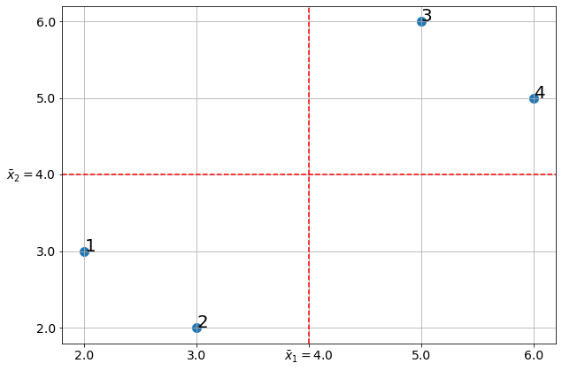

import numpy as np
import pandas as pd
import matplotlib.pyplot as plt
from sklearn.decomposition import PCAПервая главная компонента
Метод главных компонент
Все особенности и тонкоссти исползования метода главных компонент.
Определение
Пусть имеюстся \(n\) наблюдений за \(m\) переменными - \(x_{ij}, i\in \overline{1,n}, j \in \overline{1,m}\). Тогда первой главной компонентой назвается функция:
\[Z_1(x_1, x_2, ... , x_m) = \sum_{j=1}^m\phi_{j}(x_j - \bar{x}_j);\]
Где: - \(\bar{x}_j\) - среднее выборочное \(j\)-й переменной \(\forall j\).
При том \(\phi_j\) подбираются так, чтобы:
\[(\phi_1, \phi_2, ... \phi_m) = argmax_{\varphi_1, \varphi_2, ..., \varphi_{m}}\left\{Var\left[\sum_{j=1}^m\varphi_{j}(x_j - \bar{x}_j)\right]\right\};\]
\[\sum_{j=1}^m \varphi_j^2 = 1.\]’
Пример
Допустим имеются \(5\) наблюдений за 2-мя переменными.
“\(\phi_{j}(x_{{i}, {j}} - \\bar{x}_{j})\)”.format(i = 2,j = 3)
for i in range(1, len(x1) + 1):
formula = ""
for j in range(1,3):
formula += "$\phi_1(x_{" + str(i) + str(j) + "} - \\bar{x}_" + str(j) + ")$"
print("- " + formula + ";")- $\phi_1(x_{11} - \bar{x}_1)$$\phi_1(x_{12} - \bar{x}_2)$;
- $\phi_1(x_{21} - \bar{x}_1)$$\phi_1(x_{22} - \bar{x}_2)$;
- $\phi_1(x_{31} - \bar{x}_1)$$\phi_1(x_{32} - \bar{x}_2)$;
- $\phi_1(x_{41} - \bar{x}_1)$$\phi_1(x_{42} - \bar{x}_2)$;- \(\phi_1(x_{1,1} - \bar{x}_1)\)\(\phi_1(x_{1,2} - \bar{x}_2)\);
- \(\phi_1(x_{2,1} - \bar{x}_1)\)\(\phi_1(x_{2,2} - \bar{x}_2)\);
- \(\phi_1(x_{3,1} - \bar{x}_1)\)\(\phi_1(x_{3,2} - \bar{x}_2)\);
- \(\phi_1(x_{4,1} - \bar{x}_1)\)\(\phi_1(x_{4,2} - \bar{x}_2)\);
x1 = np.array([2, 3, 5, 6])
x2 = np.array([3, 2, 6, 5])
plt.figure(figsize = [10, 7])
plt.scatter(x1, x2, s = 100)
for i in range(len(x1)):
plt.annotate(
str(i+1), (x1[i], x2[i]), fontsize = 20
)
plt.axhline(
np.mean(x2), color = 'red', linestyle = "dashed"
)
plt.axvline(
np.mean(x1), color = "red",linestyle = "dashed"
)
def create_tiks(values, sub_index):
ticks_vals = np.unique(np.concatenate(
[values, [np.mean(values)]]
))
tick_labels = \
[
str(tick_val)
if tick_val != np.mean(x1)
else "$\\bar{x}_ " + sub_index + " = $" + str(tick_val)
\
for tick_val in ticks_vals
]
return [ticks_vals, tick_labels]
plt.xticks(*create_tiks(x1, "1"), fontsize = 14)
plt.yticks(*create_tiks(x2, "2"), fontsize = 14)
plt.grid()
x1 - np.mean(x1)
x2 - np.mean(x2)array([-2., 0., -1., 2., 1.])